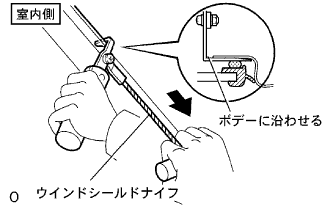

フロントサイドフィックス ウインドウASSY RH 取り外し |
| 1. フロントサイドフイツクスウインドウ脱着時の注意事項 |
フロントサイドフイツクスウインドウ取り付けにおいて、フロントサイドフィックスウインドウのクリップが破損している場合、破損したクリップの代わりにブチルテープを使用することで接着剤硬化中のガラス保持ができるため、フロントサイドフィックスウインドウの再使用は可能である。
| 2. フロントピラー ガーニッシュ LWR RH取りはずし |
 |
車両後方端部から上方に引き、ツメのかん合5箇所をはずす。
車両後方に引き、フロントピラーガーニツシユLWR RHを取りはずす。
| 3. フロントピラー ガーニッシュ RH取りはずし |
 |
ガーニツシユ上部から手で車両内側方向に引いて、クリップのかん合を取りはずし、フロントピラーガーニッシュRHを取りはずす。
| 4. フロントサイドフィックス ウインドウASSY RH取りはずし |
 |
フロントサイドフィックスウインドウASSY RH外周のボデー面に保護テープを貼る。
吸引ゴムを取り付ける。
ウインドシールドナイフを使用する場合。
ガラス接着部に石けん水を十分に塗布する。
ボデー室内側より接着剤にウインドシールドナイフを差し込む。
|  |
刃先とボデー端部を直角に保持しながら、ウインドシールドナイフの刃をボデー面および端部に合わせるようにしてボデー端部と平行に引いて接着剤を切り離す。
ピアノ線を使用する場合
 |
図のようにピアノ線(0.6ｍｍが適当)を通し、両端をマイティプラーに取り付ける。
ピアノ線を交互に引いてクリップを残し、接着部を切り離す。
吸引ゴムを持ち、室内側からプライヤーなどでクリップのかん合をはずし、フロントサイドフィックスウインドウASSY RHを取りはずす。